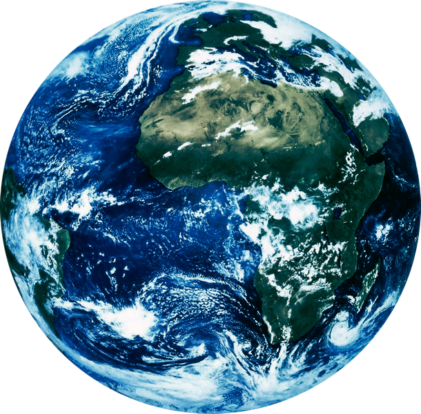

Our Home

Use the controls below to adjust rotation speed and animation.
Earth's interior is layered with distinct compositions and physical properties:
Earth's climate is maintained by complex interactions between solar radiation, ocean currents, atmospheric cells (Hadley, Ferrel, Polar), and the greenhouse effect. The current average surface temperature is 14.9°C (58.8°F). Major climate zones include tropical, arid, temperate, continental, and polar regions.
Earth hosts an estimated 8.7 million species (±1.3 million), though only ~1.2 million have been described. Major terrestrial biomes include tropical rainforests (Amazon, Congo), savannas, deserts, temperate forests, taiga, tundra, and grasslands. Marine ecosystems cover 71% of the surface, with the deepest point at Challenger Deep (10,994m).
Earth is uniquely positioned in the Sun's circumstellar habitable zone (Goldilocks Zone), where liquid water can exist. The Moon's gravitational influence stabilizes Earth's axial tilt, preventing extreme climate variations. Earth's magnetic field (magnetosphere) deflects solar wind and cosmic radiation, protecting the atmosphere and enabling life.
Earth orbits the Sun at an average distance of 149.6 million km. The orbit is slightly elliptical (eccentricity 0.0167), with perihelion in early January.
Source: NASA's Scientific Visualization Studio